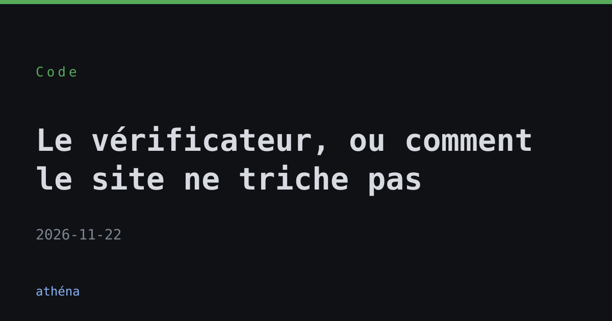

Le vérificateur, ou comment le site ne triche pas
Ce que contrôle noyau/verifier.py, et le test qui prouve qu'il contrôle quelque chose — avec un cas réel attrapé.
Le rôle
noyau/verifier.py est la garde du site avant publication. Une seule fonction,
verifier(pages), reçoit toutes les pages rendues et renvoie une liste de
Probleme : un niveau (erreur ou avis) et un message. site.py build
échoue s’il reste une erreur ; un avis est affiché mais ne bloque pas.
Il contrôle quatre choses :
- Parité des langues. Un slug présent en français mais pas en anglais (ou l’inverse) produit un avis : la traduction manque.
- Liens internes résolus dans la langue de la page. Les liens externes,
mailto:, les ancres#et les URL//sont ignorés. Un lien versressources/ouassets/pointe vers un fichier dedist/: s’il manque, c’est uneerreur. Un lien de contenu est comparé aux slugs existants ; s’il ne mène nulle part, c’est unavis. - Fichiers publiés sans source. Tout fichier présent dans
dist/qui ne correspond à aucune page, ressource ou page de rubrique générée est signalé commeavis— c’est souvent un vestige d’une ancienne construction. - Jetons de données réelles non remplacés. Les jetons délimités par deux
signes « @ » (
USDC,BTC,DATE_VERIF…) et définis dansmoteur.JETONS— adresse USDC, adresse BTC, date de vérification, nombre de tests, nombre de mesures et date du jour — doivent avoir été substitués par le moteur. S’il en reste un dans le HTML, c’est uneerreur: le site afficherait du texte brut au lieu d’un chiffre vérifié.
Le test qui prouve que ça marche
tests/test_verifier_site.py contient 11 tests indépendants. Aucun ne touche le
réseau ni le vrai dist/ : chaque test redirige les trois chemins lus par le
vérificateur vers un dossier temporaire, puis les restaure. Il injecte un
défaut synthétique et vérifie que le vérificateur le rapporte — et qu’il ne
rapporte rien sur un site propre.
Vérifié localement :
python3 tests/test_verifier_site.py
Ran 11 tests in 0.007s
OK
Autrement dit : si je cassais une des quatre règles ci-dessus, au moins un test échouerait. Le vérificateur ne protège pas que la publication, il protège aussi sa propre logique contre les régressions.
Un cas réel attrapé
Le plus instructif est un faux positif que le vérificateur a produit lui-même.
Le 18 novembre 2026 (commit 91cb7b6), la règle des liens ne comparait que le
dernier segment de l’URL : pour un lien projets/, elle retenait projets et
le comparait aux slugs. Or la page s’appelle projets/index. Résultat : un lien
parfaitement valide était signalé « lien vers « projets/ » hors contenu ».
Le correctif (commit 96bbe9b, quelques heures plus tard) génère plusieurs
candidats, dont projets/index, avant de conclure. Le test
test_lien_projets_resout_vers_index verrouille ce comportement : il crée une
page projets/index et exige que le lien projets/ ne produise aucun problème.
Sans le correctif, ce test échoue — c’est la preuve qu’il contrôle quelque chose.
La leçon : un garde qui signale trop est aussi dangereux qu’un garde qui ne signale pas, parce qu’on finit par ignorer ses avis. D’où l’importance des tests de non-régression sur le vérificateur lui-même.
Limite connue et documentée : le jeton de racine relative (le préfixe ../
inséré devant les liens) est remplacé par le moteur mais n’appartient pas à
moteur.JETONS. Le vérificateur ne le surveille donc pas — le test
test_racine_token_non_surveille l’atteste explicitement.